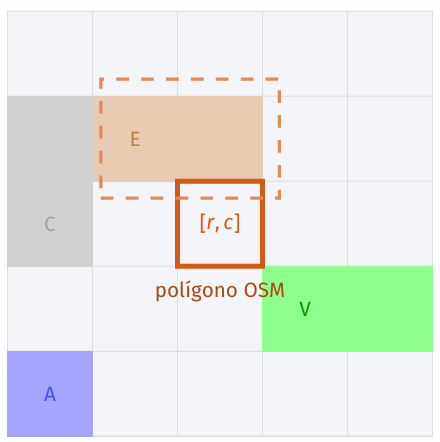

Keywords — agent-based modeling, ABM, population dynamics, Aedes aegypti, georeferenced grid, OpenStreetMap, local stochastic rules, mating dynamics, emergent carrying capacity
A Fully Local, Sex-Structured Agent-Based Model for Aedes aegypti Population Dynamics over a Georeferenced Urban Grid
Spatio-temporal models of mosquito populations overwhelmingly represent only adult females, omitting males and mating dynamics altogether. This leaves them unable to evaluate control strategies that depend directly on male–female encounters, such as the Sterile Insect Technique (SIT). A related gap concerns carrying capacity, which most models fix as a constant parameter instead of allowing it to emerge from local interactions — movement, competition for breeding sites, and density-dependent mortality — among individual agents.
This work presents a fully local, sex-structured agent-based model of Aedes aegypti population dynamics over a discrete, georeferenced grid built from real OpenStreetMap data, capturing urban heterogeneity (buildings, streets, water, vegetation) and real breeding-site locations. Departing from ODE-based demographic rules, every transition is resolved through strictly local, finite-radius interactions: juvenile mortality is density-dependent within a neighborhood, mating requires the presence of males within a radius around each unmated female, and oviposition is restricted to the nearest breeding site within a maximum radius. Agents transition through four states — juvenile, male, unmated female, and gravid female — updated each time step through a synchronized scheme that shuffles agents, resolves all demographic transitions, and only then executes stochastic spatial movement, avoiding ordering bias and temporal inconsistency between agents. This design directly tests whether an emergent carrying capacity can arise from local rules alone, rather than being imposed as a global constant, and lays the groundwork for future evaluation of sex-dependent control strategies such as SIT.
Continuum models. The classical approach to population dynamics represents individuals as a continuous, well-mixed density and expresses the rate of change of the population as an ordinary differential equation (ODE), assuming every individual has an equal chance of interacting. Chen et al. modeled Aedes aegypti proliferation and control in Miami using rainfall data and trap catches, restricting the state variable to adult females as the sex actually captured by traps, and found that rainfall drives breeding-site availability disproportionately in tourist areas and that adulticides are effective but perform best combined with larvicides. This tractability comes at a cost: ODEs cannot represent individual location or local interaction, which limits their use wherever spatial structure drives the dynamics.
Spatially-explicit continuum models. Partial differential equations (PDEs) extend ODEs by incorporating spatial variation, representing the population as a continuous function of space and time. Yamashita et al. modeled A. aegypti dispersal across urban neighborhoods incorporating wind and topography — again restricted to adult females as the only mobile, winged stage — showing that the population diffuses slowly within blocks but rapidly along streets due to wind-driven convection, and concluding that uniform neighborhood-wide fumigation outperforms spatially localized treatment. Ishida et al. analyzed a chemotaxis-driven PDE with movement-induced mortality and established precise mathematical conditions preventing finite-time blow-up, showing that an upper bound on population density can emerge purely from the interplay between movement and mortality, without explicitly imposing a carrying capacity. Despite this greater spatial expressiveness, PDEs remain costly to discretize at high resolution and, like the ODE approach above, none of these continuum models distinguish sex.
Agent-based and cellular-automata models. ABMs and cellular automata (CA) instead discretize the population into individual entities governed by explicit local rules, making heterogeneity and local interaction native to the model rather than an approximation. Maneerat and Daudé applied an ABM over a georeferenced Delhi grid capturing buildings, streets, and parks — restricted to adult females — and found that mosquitoes are strongly sedentary (<100 m), with buildings acting as movement barriers and parks as dispersal corridors. Ferreira et al. used a CA to evaluate the Sterile Insect Technique (SIT) and is notably the only reviewed model to explicitly distinguish sex — wild males, sterile males, and fertile/infertile females — finding that heterogeneous breeding-site distribution can render SIT impractical. García et al. applied a CA to a different pest species (D. speciosa), representing only adult females through a fixed 1:2 sex ratio at the larva-to-adult transition, and showed that intercropping reduces pest dispersion.
| Work | Model | Spatially Explicit | Sex-Disaggregated | Key Finding |
|---|---|---|---|---|
| Ferreira (2008) | CA | Yes (real breeding sites) | Yes (wild/sterile ♂ · fertile/infertile ♀) | Breeding-site heterogeneity can make SIT impractical |
| García (2014) | CA | Yes (field grid) | No (females only, fixed 1:2 ratio) | Intercropping reduces pest dispersion |
| Maneerat & Daudé (2017) | ABM | Yes (real urban grid, Delhi) | No (females only) | Buildings as barriers, parks as corridors; sedentary (<100 m) |
| Yamashita (2018) | PDE | Yes (wind + topography) | No (females only) | Wind-driven asymmetric dispersal along streets |
| Chen (2023) | ODE | No | No (females only) | Rainfall-driven breeding; larvicide + adulticide optimal |
| Ishida (2023) | PDE | Yes (chemotaxis) | No | Density bound emerges from movement–mortality interplay, no explicit K |
| Ours | ABM | Yes (real OSM grid) | Yes (4 states: juvenile, male, unmated & gravid ♀) | Local mating dynamics + emergent carrying capacity |
Table I. Summary of reviewed spatio-temporal models of mosquito population dynamics.
As the comparison shows, the overwhelming majority of reviewed models consider only adult females, with Ferreira et al. the sole exception to incorporate explicit sex distinction — and only in the narrow context of SIT evaluation. This near-universal omission of mating dynamics leaves an open methodological gap: ABMs, by encoding local interaction rules between individuals, provide the most natural framework for representing male–female encounters as the mechanism that generates reproductive dynamics in the first place. Separately, Ishida et al.'s finding — that a density bound can emerge purely from the interplay of movement and mortality — raises a direct design question for ABMs: whether parameters such as carrying capacity can likewise emerge from local rules — stochastic movement, competition for breeding sites, and density-dependent mortality — rather than being fixed as a global constant. Closing both gaps at once — sex-structured local interaction and emergent carrying capacity over a real, georeferenced urban grid — is the core contribution of the present work.
Rather than administrative boundaries, the study area is defined parametrically by a centroid (φc, λc) and a square extent L, keeping the pipeline reusable for any georeferenced urban area. Geographic data is pulled from OpenStreetMap through the OSMnx library (a high-level interface over the Overpass API) via four independent queries — buildings, water bodies (rivers, ponds, wetlands — the stagnant-water sites Ae. aegypti relies on for oviposition), vegetation (parks, gardens, forests, meadows), and the full street network. Each layer is then rasterized cell-by-cell onto a discrete grid, and finally the real trap coordinates are integrated as a georeferenced overlay.
| Symbol | Description | Value |
|---|---|---|
| φc, λc | Centroid latitude / longitude | −25.2637°, −57.5759° |
| L | Map extent (square side) | 1000 m |
| Δs | Cell size (spatial resolution) | 3 m |
| N = ⌊L/Δs⌋ | Grid cells per side | 333 |
Table II. Input parameters defining the location and resolution of the Grid Map.
For every cell [r, c], its real-world polygon is computed and tested for intersection against each OSM layer. Since streets are line geometries rather than polygons, each segment is first expanded through a 3 m geometric buffer to approximate its physical width. For the remaining layers, a coverage fraction is computed as cover = Area(geom ∩ cell) / Area(cell), and the cell is assigned a class once cover exceeds a per-layer threshold — 0.30 for buildings, 0.20 for water (kept permissive, since any significant water presence matters for the mosquito life‑cycle), and 0.45 for vegetation (kept strict, to avoid flagging cells with only scattered sidewalk trees). An implicit priority hierarchy resolves overlaps — Building > Water > Vegetation > Road > Empty — with roads only allowed to overwrite still-empty cells, placing the street layer at the lowest precedence.

Fig. 1. Cell-polygon intersection: the active cell [r, c] (outlined) is tested against the overlapping OSM geometry (dashed) to compute cover, the fraction of its area covered.
| ID | Class | Color | Ecological rationale |
|---|---|---|---|
| 0 | Empty Space | Cream | Unclassified open ground |
| 1 | Road | Gray | Open, sun-exposed — avoided by Ae. aegypti |
| 2 | Vegetation | Green | Shaded corridors preferred for movement |
| 3 | Water | Blue | Stagnant water — oviposition sites |
| 4 | Building | Brown | Physical movement barrier |
| 5 | Trap | Magenta | Real device location, top overwrite priority |
Table III.
Grid cell categories, encoded as a uint8 matrix of size N×N.
Geographic coordinates are converted to grid indices in two steps. First, an equirectangular projection — valid at this scale, where Earth's curvature is negligible — maps latitude/longitude offsets from the centroid to local metric coordinates: x = R·Δλ·cos(φc), y = R·Δφ (with R = 6,378,137 m, the WGS84 equatorial radius). Second, those metric coordinates are floor-divided into matrix indices: c = ⌊(x + L/2)/Δs⌋, r = ⌊(L/2 − y)/Δs⌋ — the sign flip on r accounts for row 0 sitting at the map's north edge while the local y-axis points north. Real trap coordinates — field-recorded ovitrap positions, cleaned of decimal-comma formatting, embedded quote characters, and out-of-range values before conversion — are integrated the same way; only traps landing inside 0 ≤ r, c < N are kept, and their cell is marked class 5, overwriting any prior classification.
Fig. 2. Satellite reference image of the study area (Esri WorldImagery).
Fig. 3. Generated Grid Map (333×333 cells, Δs = 3 m) with integrated trap positions.
Building blocks, street layout, green areas, and trap positions all line up geometrically between the two views, qualitatively validating the classification pipeline. This Grid Map is the shared simulation environment for both agent-based models developed in this work: its purely parametric design — centroid, extent, and cell size as the only required inputs — lets it adapt to any georeferenced urban area without touching the pipeline logic, replacing the homogeneous synthetic environments common in vector-dynamics models with a real geographic anchor. The trap identifier is agnostic to device type — installed ovitraps or adult-counting traps such as the one developed in this work — which opens the door to directly comparing field counts against model predictions in future work, closing the loop on parameter calibration.